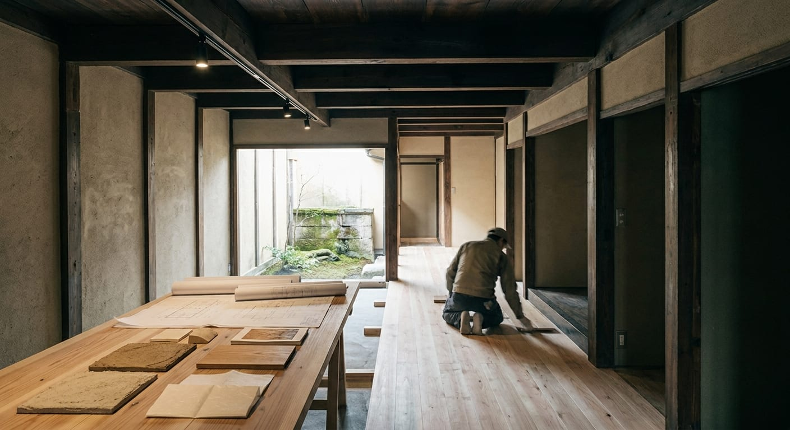
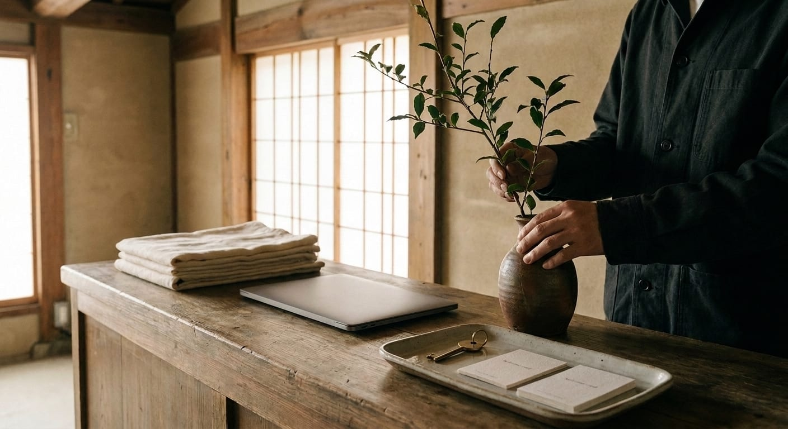

From property to place.
We combine property strategy, adaptive reuse and hospitality operations to give distinctive assets a commercially sustainable future.
Our involvement can begin with a single building or a wider neighbourhood opportunity. Depending on the project, we can advise, develop the concept, establish the operating model, coordinate specialist partners or participate in ongoing hospitality management.

Conservation & Adaptive Reuse
Preserve character. Create relevance.
We assess heritage, traditional and underutilised properties through both a conservation and commercial lens.
Rather than imposing a predetermined use, we consider the building, location, planning context, customer and market before determining what it can realistically become.
Hospitality Development
The building is only the beginning.
Successful hospitality requires a coherent proposition connecting property, guest, location and operation.
We develop boutique hospitality concepts from initial positioning through the practical operating model.
Hospitality Management
From concept to operation.
Conservation Dwelling's role does not necessarily end when a property opens.
We develop and oversee the commercial and operational systems required to run hospitality assets effectively.

Asset Repositioning
Finding the better use.
Properties change. Markets change. Neighbourhoods change.
We work with owners to reconsider assets whose existing use no longer represents their strongest opportunity.
We combine property analysis with hospitality and customer thinking to establish a new proposition, commercial strategy and path to implementation.
Placemaking & Guest Experience
Hospitality does not stop at the front door.
The strongest places are connected to their surroundings.
We develop experiences that connect accommodation with neighbourhood, architecture, craft, food, culture and local communities.
Owner & Development Advisory
One property. Many disciplines.
Adaptive reuse frequently requires owners to coordinate architects, conservation specialists, contractors, operators, consultants and local stakeholders.
Conservation Dwelling can act as the owner's strategic representative, helping maintain coherence between the property vision and its commercial operation.